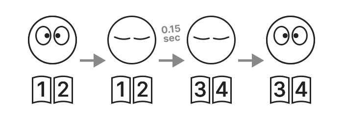

FlipByBlink
Eine E-Book-App, mit der Sie durch Blinzeln umblättern können


√úberblick.
Nur eine besondere Funktion. Dies ist eine App für iPhone und iPad, die es Ihnen ermöglicht, Seiten umzublättern, indem Sie bewusst für einen etwas längeren Zeitraum mit geschlossenen Augen blinzeln.
Abgesehen von den oben genannten Funktionen handelt es sich um eine einfache und gewöhnliche E-Book-Reader-App.
So funktioniert das Umblättern


Ein etwas länger geschlossenes Augenlid bewirkt, dass die Seite vorwärts geschickt wird, und wenn Sie die Augen öffnen, sind Sie bereits auf der nächsten Seite angelangt. Normales Blinzeln führt nicht zum Umblättern der Seite.
Das Blinzeln wird von der eingebauten Kamera und den Sensoren des Geräts erkannt.
Wie bei den meisten E-Book-Apps können Sie die Seiten auch durch Antippen oder Streichen auf dem Bildschirm umblättern.
E-Book-Format.
- Nur für Bücher mit "festem Layout". Zum Beispiel Papierbücher, die direkt in Papierbücher oder Comics umgewandelt werden.
- Unterstützt den Import von PDF- und ZIP-Dateien.
Anwendungsfälle
- Allgemeines Lesen
- Spielen eines Musikinstruments beim Betrachten der Notenblätter
- Kochen, während man in einem Rezeptbuch nachschaut
- Lesen in Zügen und Bussen
- Lesen für Menschen mit körperlichen Behinderungen

Unterstützende Geräte
Verwendet das Apple Framework ARKit/FaceTrackingAPI für die Blinzelerkennung. Dies erfordert eine TrueDepth-Kamera oder einen A12Bionic-Chip oder höher.
⚠️ Nicht unterstützte Geräte
- iPhone
- 6s
- 6s Plus
- 7
- 7 Plus
- 8
- 8 Plus
- SE 1. Generation
- iPad
- 5. Generation
- 6. Generation
- 7. Generation
- Air 2. Generation
- Mini 4. Generation
- Pro 9,7-Zoll-Modell
- Pro 10,5"-Modell
- Pro 12,9"-Modell 1. Generation
- Pro 12,9"-Modell 2. Generation
- iPod touch
üöß Experimentelle Funktionen (opt-in)
- Ändern der Zeit, die zum Umblättern einer Seite benötigt wird (standardmäßig 0,15 Sekunden)
- Funktion zum Zurückblättern einer Seite mit einem einzigen Augenzwinkern
Spezifikationen
Preis
Kostenfrei
In-App-Kauf
Keine
Plattformen
- iOS 15.0 und höher
- iPadOS 15.0 und höher